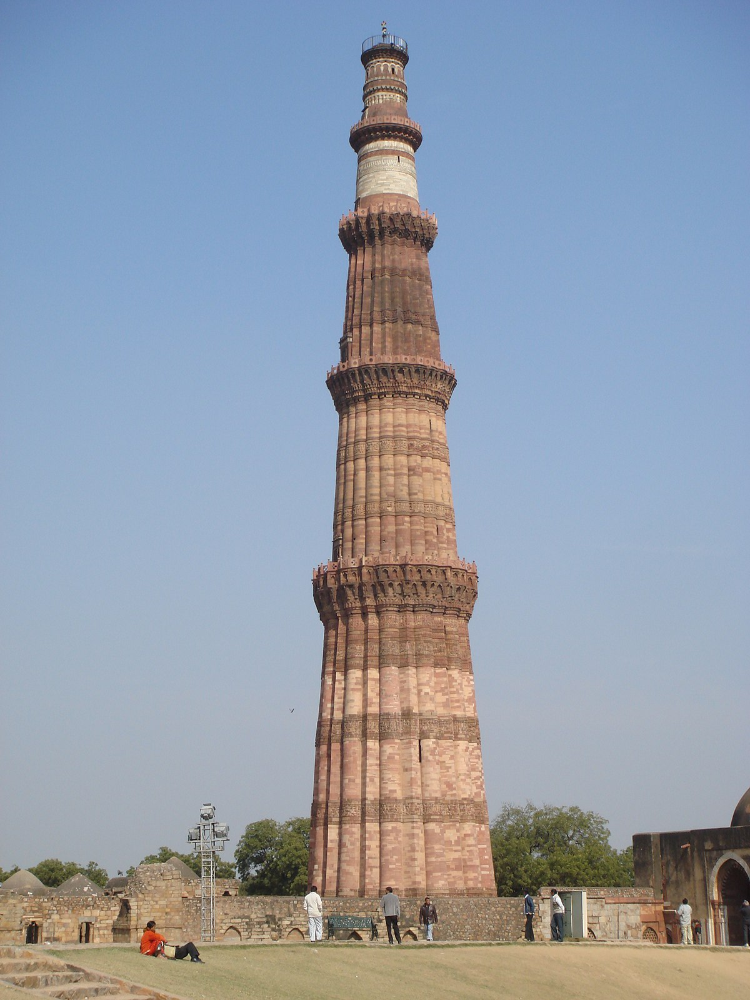
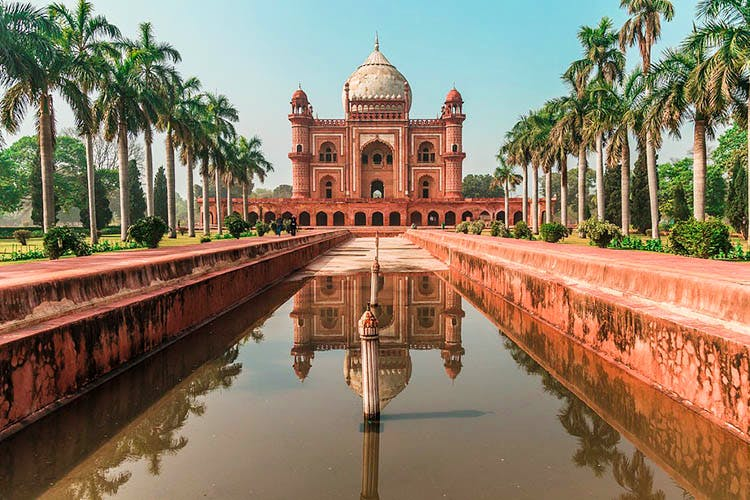

Cool Attractions To Do In Delhi
Red Fort

The Red Fort is a historic fort in the city of Delhi in India. It was the main residence of the emperors of the Mughal dynasty for nearly 200 years, until 1856.It is located in the centre of Delhi and houses a number of museums. In addition to accommodating the emperors and their households, it was the ceremonial and political center of the Mughal state and the setting for events critically impacting the region.Constructed in 1639 by the fifth Mughal Emperor Shah Jahan as the palace of his fortified capital Shahjahanabad, the Red Fort is named for its massive enclosing walls of red sandstone and is adjacent to the older Salimgarh Fort, built by Islam Shah Suri in 1546 AD. The imperial apartments consist of a row of pavilions, connected by a water channel known as the Stream of Paradise (Nahr-i-Bihisht). The fort complex is considered to represent the zenith of Mughal creativity under Shah Jahan,[citation needed] and although the palace was planned according to Islamic prototypes, each pavilion contains architectural elements typical of Mughal buildings that reflect a fusion of Persian, Timurid and Hindu traditions. The Red Fort's innovative architectural style, including its garden design, influenced later buildings and gardens in Delhi, Rajasthan, Punjab, Kashmir, Braj, Rohilkhand and elsewhere.
Qutub Minar
The Qutb Minar, also spelled as Qutub Minar, or Qutab Minar, is a minaret that forms part of the Qutb complex, a UNESCO World Heritage Site in the Mehrauli area of Delhi, India.Qutb Minar is a 73-metre (239.5 feet) tall tapering tower of five storeys, with a 14.3 metres (47 feet) base diameter, reducing to 2.7 metres (9 feet) at the top of the peak.It contains a spiral staircase of 379 steps.Its design is thought to have been based on the Minaret of Jam, in western Afghanistan. Qutb ud Din Aibak, founder of the Delhi Sultanate, started construction of the Qutb Minar's first storey around 1192. In 1220, Aibak's successor and son-in-law Shamsuddin Iltutmish completed a further three storeys. In 1369, a lightning strike destroyed the top storey. Firoz Shah Tughlaq replaced the damaged storey, and added one more. Sher Shah Suri also added an entrance to this tower while he was ruling and Humayun was in exile.
Humayun's Tomb
Humayun's tomb (Hindustani: Maqbara-i Humayun) is the tomb of the Mughal Emperor Humayun in Delhi, India. The tomb was commissioned by Humayun's first wife and chief consort, Empress Bega Begum (also known as Haji Begum), in 1569-70, and designed by Mirak Mirza Ghiyas and his son, Sayyid Muhammad, Persian architects chosen by her.It was the first garden-tomb on the Indian subcontinent, and is located in Nizamuddin East, Delhi, India, close to the Dina-panah Citadel, also known as Purana Qila (Old Fort), that Humayun found in 1533. It was also the first structure to use red sandstone at such a scale. The tomb was declared a UNESCO World Heritage Site in 1993,and since then has undergone extensive restoration work, which is complete. Besides the main tomb enclosure of Humayun, several smaller monuments dot the pathway leading up to it, from the main entrance in the West, including one that even pre-dates the main tomb itself, by twenty years; it is the tomb complex of Isa Khan Niyazi, an Afghan noble in Sher Shah Suri's court of the Suri dynasty, who fought against the Mughals, constructed in 1547 CE.
India Gate

The India Gate (originally called the All India War Memorial) is a war memorial located astride the Rajpath, on the eastern edge of the "ceremonial axis" of New Delhi, India, formerly called Kingsway. India Gate is a memorial to 70,000 soldiers of the British Indian Army who died in the period 1914–21 in the First World War, in France, Flanders, Mesopotamia, Persia, East Africa, Gallipoli and elsewhere in the Near and the Far East, and the Third Anglo-Afghan War. 13,300 servicemen's names, including some soldiers and officers from the United Kingdom, are inscribed on the gate.The India Gate, even though a war memorial, evokes the architectural style of the triumphal arch like the Arch of Constantine, outside the Colosseum in Rome, and is often compared to the Arc de Triomphe in Paris, and the Gateway of India in Mumbai. It was designed by Sir Edwin Lutyens.